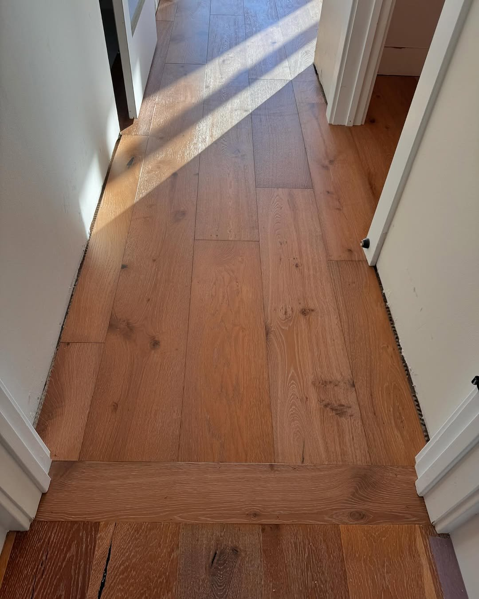
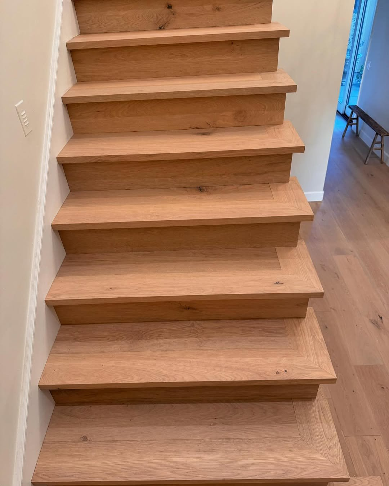
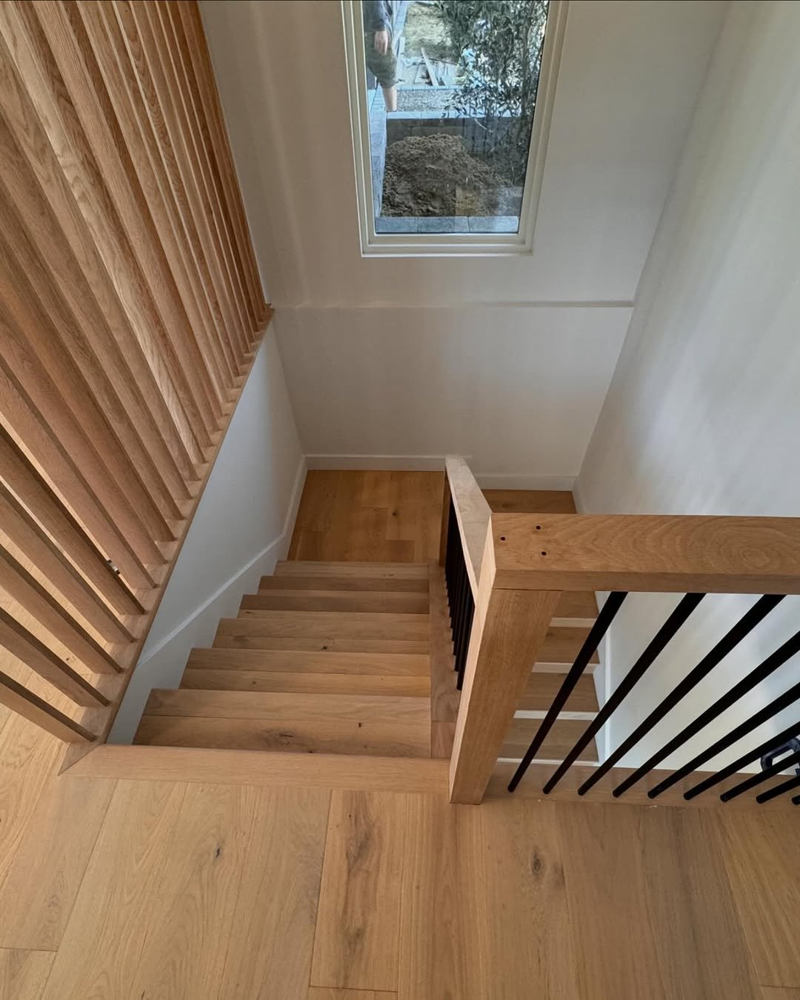

Hardwood Flooring Installation
Solid & Engineered Hardwood
There is nothing that transforms a home the way hardwood flooring does. It adds warmth, character, and a sense of permanence that no other material can replicate. At Top Tier Custom Floors, hardwood installation is our bread and butter. We have laid hundreds of thousands of square feet across San Diego County and North Orange County, from new construction in Escondido to full-home renovations in Rancho Santa Fe.
Every hardwood project starts with understanding your space. Subfloor type, room dimensions, traffic patterns, natural light, and the overall design direction all influence which species, plank width, and installation method will deliver the best result. We do not take shortcuts, and we do not guess. Precision measurement and meticulous subfloor preparation are what separate a floor that looks good on day one from a floor that still looks flawless ten years later.

Species Selection & Plank Options
The right wood species makes all the difference in performance and aesthetics.
Choosing the Right Species
White oak dominates the Southern California market for good reason. Its tight, interlocking grain resists moisture penetration better than red oak, and it takes stain with remarkable consistency. For homeowners who want a contemporary, European look, white oak planks in a matte wire-brushed finish are hard to beat. Hickory is the go-to for anyone prioritizing durability -- it scores 1,820 on the Janka hardness scale, making it one of the hardest domestic species available.
We also work with maple, walnut, and specialty exotics like acacia and Brazilian cherry. Each species has distinct grain patterns, hardness ratings, and color ranges. During your consultation, we bring samples so you can see how different species look against your cabinetry, walls, and natural light conditions.
Wide Plank vs. Narrow Plank
Wide plank flooring (5 inches and wider) creates a more open, modern feel and shows off the natural grain of the wood. Narrow plank (2-1/4 to 3-1/4 inches) delivers a more traditional, classic look. Wider planks require more precise subfloor preparation because any imperfection is magnified. We work with planks up to 9 inches wide from brands like Duchateau and California Classics, ensuring the subfloor is dead flat before a single board goes down.

How Hardwood Installation Works
In-Home Assessment & Material Selection
We evaluate your subfloor type, measure the space, and discuss your design goals. You choose from our curated selection of hardwood species, plank widths, and finish options. We calculate material quantities with a proper waste factor so nothing runs short mid-project.
Subfloor Preparation
This is where most installers cut corners, and it is where we never do. We check the subfloor for flatness, moisture content, and structural integrity. Concrete slabs get a moisture test. Plywood subfloors are inspected for squeaks and loose areas. If the subfloor is not within tolerance, we level it with self-leveling compound or additional fasteners before any wood goes down.
Acclimation
Wood needs to reach equilibrium with your home's temperature and humidity before installation. We deliver the material 48-72 hours early and let it acclimate in the rooms where it will be installed. Skipping this step is the number one cause of post-installation gaps and buckling.
Installation
Depending on the subfloor and material, we use nail-down, glue-down, or floating installation methods. Nail-down over plywood gives the most solid, traditional feel. Glue-down is the standard for engineered hardwood over concrete. Floating installations work well for certain engineered products and are the fastest to complete. Every board is inspected for defects before it goes down, and we rack the floor in a randomized pattern to avoid clustering of similar grain or color.
Transitions & Finishing
We install T-moldings, reducers, and threshold transitions that match the flooring. Baseboards are reinstalled or replaced. If you chose unfinished hardwood, we sand and apply your selected finish on site. The space is cleaned thoroughly and we do a final walk-through with you to make sure every detail meets your expectations.
Hardwood Projects

Nail-Down, Glue-Down & Floating
Each installation method has its place. Nail-down installation uses a pneumatic flooring nailer to secure each plank to a plywood subfloor. This creates the most rigid, quiet floor and is the gold standard for solid hardwood. It is the method we use most often in homes with raised foundations throughout Poway, Escondido, and Valley Center.
Glue-down installation bonds each plank directly to a concrete slab using a premium urethane adhesive. This is the go-to method for San Diego's slab-on-grade construction, which is common in condos and single-story homes from Carlsbad to La Jolla. It creates a solid feel with no hollow spots and excellent moisture resistance when paired with a proper moisture barrier.
Floating installation locks planks together without fastening them to the subfloor. This works well for certain engineered products and is ideal when you need to install over existing tile or for spaces where you may want to remove the floor later. Floating floors go in faster, but not every product is suited for this method.
Hardwood Flooring FAQ
Hardwood flooring installation in San Diego typically ranges from $8 to $15 per square foot for labor, depending on the installation method, subfloor condition, and complexity of the layout. Material costs vary widely based on species and grade -- domestic oak runs $4-8 per square foot, while exotic species like Brazilian walnut can reach $12-18. We provide detailed estimates after an in-home assessment so there are no surprises.
A typical 1,000 square foot hardwood installation takes 3-5 days, including subfloor preparation, installation, and finishing. Larger projects or complex layouts with custom patterns can take 7-10 days. We also recommend a 48-72 hour acclimation period for the wood before installation begins, which is especially important in San Diego's coastal climate.
In Southern California, engineered hardwood is often the better choice for most homes. It handles humidity fluctuations better than solid hardwood, can be installed over concrete slabs (common in San Diego), and works well with radiant heating. Solid hardwood is ideal for above-grade installations on wood subfloors where you want the option to sand and refinish multiple times over decades. We install both and can help you decide based on your specific subfloor and environment.
White oak is the most popular and practical choice for San Diego homes. It has tight grain structure that resists moisture absorption, holds stain beautifully, and scores high on the Janka hardness scale. European oak and hickory are also excellent choices. For coastal homes in Del Mar, Carlsbad, or Oceanside where salt air is a factor, engineered hardwood with a sealed finish provides extra protection against humidity.
Sweep or vacuum regularly with a soft-bristle attachment to remove grit that can scratch the finish. Use a damp (not wet) mop with a pH-neutral hardwood floor cleaner. Place felt pads under furniture legs, use entry mats to catch sand and debris, and keep indoor humidity between 35-55%. Avoid steam mops, vinegar, and oil-based cleaners. With proper care, a quality hardwood floor will last 50+ years before needing refinishing.
More From Top Tier
Herringbone & Patterns
Take your hardwood to the next level with herringbone, chevron, and custom inlay patterns.
Stair Installation
Match your new hardwood floors with custom stair treads, risers, and seamless transitions.
Sand & Refinish
Already have hardwood? We can restore existing floors to their original beauty.
Service Areas
We install custom flooring across San Diego County and North Orange County.
Ready for New Hardwood Floors?
Get a free estimate for your hardwood flooring project. We serve San Diego, Escondido, Carlsbad, Rancho Santa Fe, Del Mar, Temecula, and throughout Orange County.